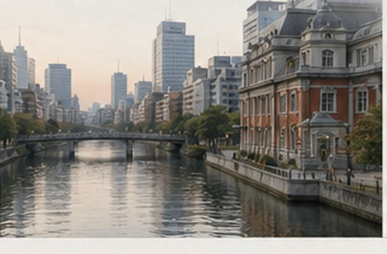
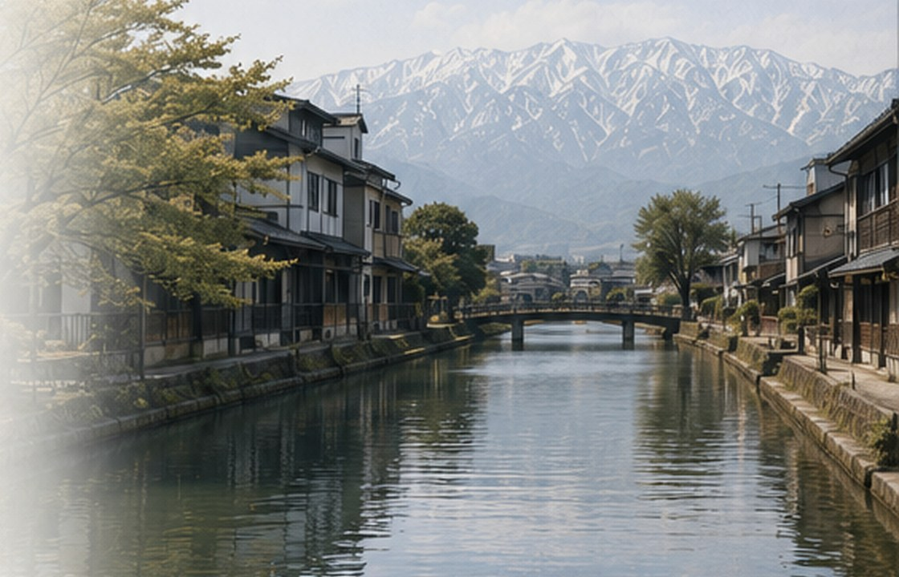
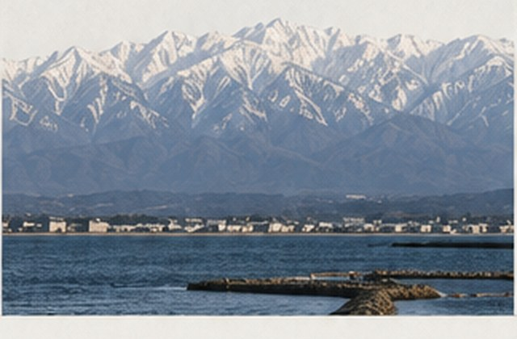
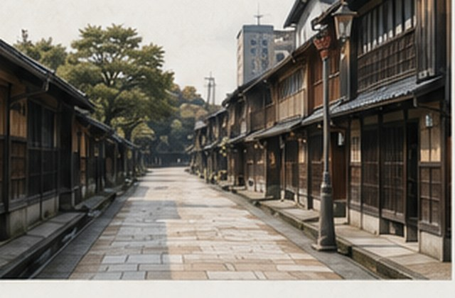
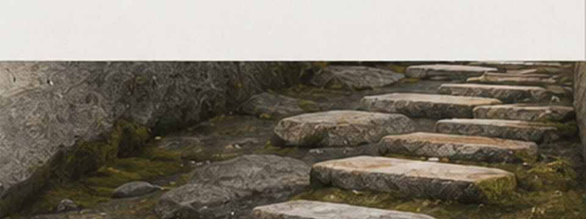

大阪 （おおさか）
大阪段由水都與商都入手，再落到寺院、街區和夜。中之島與堂島米市場交代城市的信用和市場；四天王寺把大阪推回古代佛教與都市形成；空堀、島之內、針中野、天滿、京橋和小酒館路線，則把大阪從名所拉回生活圈、酒場與晚間節奏。

以地方風土閱讀旅程
這是一段從關西轉入北陸的慢行記錄。在日常的縫隙裡，遇見城市的肌理、山海的氣息，以及職人手中靜靜流動的時間。

大阪段由水都與商都入手，再落到寺院、街區和夜。中之島與堂島米市場交代城市的信用和市場；四天王寺把大阪推回古代佛教與都市形成；空堀、島之內、針中野、天滿、京橋和小酒館路線，則把大阪從名所拉回生活圈、酒場與晚間節奏。

富山段已不只是山海食材，而是一條材料與地方制度的路線。富山市ガラス美術館／TOYAMA キラリ、岩瀬北前船與満寿泉、高岡瑞龍寺、山町筋、金屋町鑄造、井波木雕、利賀山路、L’evo 和山帽子，讓富山由水、港、工藝、山村和餐桌組成完整北陸中段。

金沢是第二次重訪，所以重點不再是兼六園式的名所消費。由大野、金沢港和魚市入城，再接前田家、室生犀星、鈴木大拙館、21世紀美術館、大樋焼、金箔、尾張町、主計町、蓄音器館、片町夜和四種餐桌，讀出一座由港、制度、工藝、思想、文學和夜生活支撐的城市。


旅行的意義，不在於抵達，而在於理解一個地方的方式。